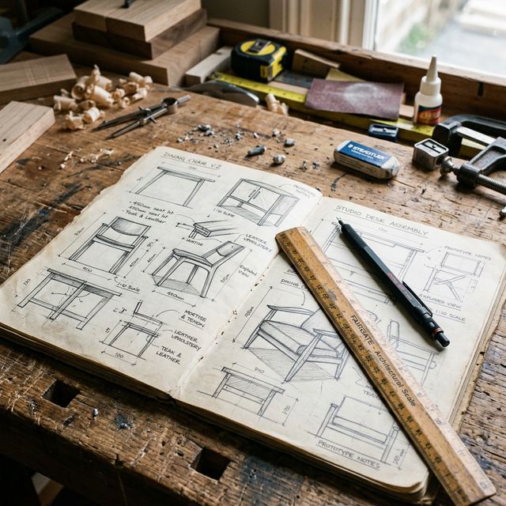

From Sketch to Soul
A bespoke commission is a journey of collaboration. Here is how we bring your vision into the physical world, one shave at a time.
Consultation & Concept
We begin with a conversation. Whether it's a rough sketch on a napkin or a fully realized Pinterest board, we discuss form, function, and the space the piece will inhabit. This is where we select the wood species that best matches your aesthetic and durability needs.

Detailed Design
Using hand-drawn sketches and detailed 3D models, we bring the concept into focus. We finalize dimensions, joinery details, and hardware selections. You'll receive a detailed proposal and timeline for the creation of your piece.

Meticulous Creation
This is the heart of the journey. Weeks are spent hand-shaping, carving joinery, and meticulously assembly the piece in our studio. We use traditional techniques—mortise and tenon, dovetails, and hand-rubbed oil finishes—to ensure the piece lasts for generations.

Finishing & Home-Going
The final coats of oil are applied, bringing out the deep character of the wood. We carefully pack and deliver the piece to your home, ensuring it settles into its new space perfectly. Your heirloom journey has officially begun.